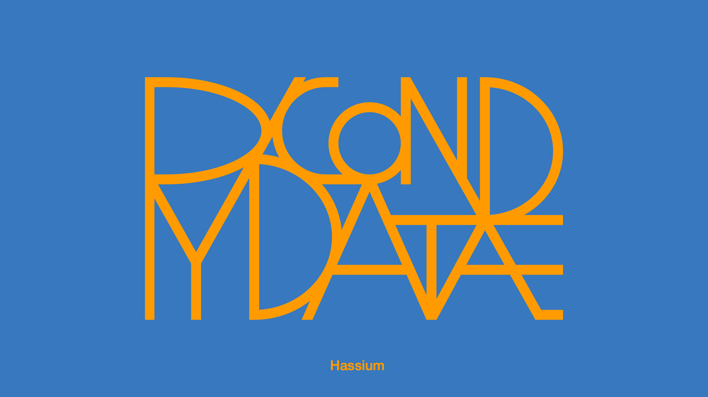
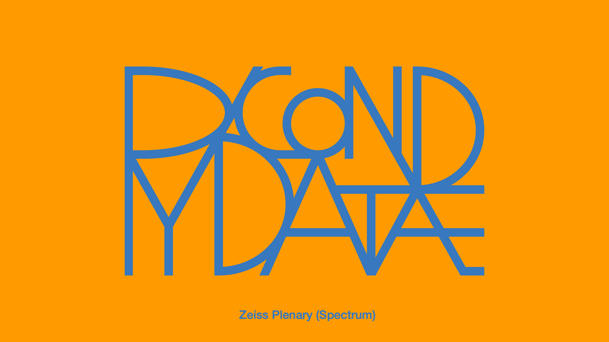

Video Presentation Detector¤
Note
This page describes the detector's internals. For the full pipeline (Vimeo download → session mapping → break images → cutting → hand-off to the publishing flow), see the Auto-Cut Pipeline guide.
A tool to automatically detect and extract presentations from videos of conferences, livestreams, or lectures that contain both presentations and break screens.
{kind=link}
Features¤
- Automatically detects transitions between break screens and presentations
- Supports batch processing of multiple videos
- Extracts presentations as separate video files
- Extracts audio from presentations as MP3 files
- Detailed output with timestamps and presentation durations
- Configurable via YAML configuration file
Installation¤
- Create and activate a virtual environment:
# Create a virtual environment
uv venv
# Activate it (Unix/MacOS)
source .venv/bin/activate
# Activate it (Windows)
.\.venv\Scripts\activate
- Install video processor dependencies:
# Install with video processing dependencies
uv pip install ".[video_processor]"
- Install FFmpeg: FFmpeg is required for video and audio extraction. The tool will not work without it.
# macOS (using Homebrew)
brew install ffmpeg
# Alternative for macOS (using MacPorts)
sudo port install ffmpeg
# Ubuntu/Debian
sudo apt-get update
sudo apt-get install ffmpeg
# Fedora
sudo dnf install ffmpeg
# Arch Linux
sudo pacman -S ffmpeg
# Windows
# Download from ffmpeg.org/download.html
# Extract the files and add the bin folder to your PATH
Verify installation with:
ffmpeg -version
Configuration¤
Configuration is stored in config.yaml. If not present, a default one will be created automatically.
Key configuration options:
input:
# Single video file path (leave empty to use folder)
video_path: ""
# Folder containing videos to batch process
folder: "input_videos"
# File extensions to process from input folder
extensions: "mp4,mkv,avi,mov,webm"
video:
# Whether to resize frames for processing (speeds up detection but reduces accuracy)
enable_resize: false
# If resize is enabled, dimensions to use (width, height)
processing_size: [320, 180]
break_detection:
# Directory for break screen images (leave empty for auto-detection)
images_dir: ""
# Similarity threshold for break screen detection (0-1)
threshold: 0.92
# Whether to auto-detect break screens if none provided
auto_detect: true
output:
# Base output folder for extracted presentations
folder: "extracted_presentations"
# Whether to extract detected presentations as separate files
extract_presentations: true
# Whether to extract audio from presentations as MP3
extract_audio: true
# Whether to save presentation metadata as JSON
save_metadata: true
Usage¤
Basic Usage¤
Single Video Processing¤
python -m video_manager.presentation_detector path/to/video.mp4 --extract --audio
This will: - Process the specified video - Extract individual presentations as separate video files - Extract audio from each presentation
Batch Processing¤
python -m video_manager.presentation_detector --input-folder path/to/videos --extract --audio
Advanced Options¤
usage: python -m video_manager.presentation_detector [-h] [--config CONFIG] [--output OUTPUT]
[--break-images BREAK_IMAGES] [--extract]
[--audio] [--input-folder INPUT_FOLDER]
[video_path]
arguments:
video_path Path to the video file to process
--config, -c CONFIG Path to custom config file
--output, -o OUTPUT Custom output folder for extracted presentations
--break-images, -b IMAGES Directory containing break screen images
--extract, -e Extract presentations as separate files
--audio, -a Extract audio from presentations as MP3
--input-folder, -i FOLDER Process all videos in specified folder
-h, --help Show help message
Example Commands¤
Using custom break screen detection:
python -m video_manager.presentation_detector video.mp4 --break-images path/to/break/images
Using custom output location:
python -m video_manager.presentation_detector video.mp4 --output path/to/output/folder
Using a custom config file:
python -m video_manager.presentation_detector --config path/to/custom/config.yaml
How It Works in Detail¤
1. Frame Sampling and Analysis¤
The detector samples frames at regular intervals throughout the video (configurable sampling rate). For each frame: - The frame is converted to grayscale and normalized - Visual features are extracted using image processing techniques - Frames are stored in memory for comparison
2. Break Screen Detection¤
Two methods are used for break screen detection:
Method 1: Using Provided Break Images - If provided, the detector compares sampled frames against known break screen images - Similarity is calculated using histogram comparison or structural similarity - Frames that match above the similarity threshold are classified as break screens
Method 2: Automatic Detection (when no break images are provided) - The detector clusters frames based on visual similarity - Large clusters of similar frames are identified as potential break screens - The most common frame clusters are selected as break screens
3. Transition Detection¤
Once break screens are identified, the detector: - Uses binary search to pinpoint exact frame transitions (improves accuracy) - Analyzes movement between adjacent frames to confirm transitions - Handles edge cases like brief interruptions or camera shifts
4. Presentation Extraction¤
For each detected presentation segment: - Start and end timestamps are precisely calculated - Video is trimmed using FFmpeg with no re-encoding (when possible) for fast extraction - Audio is extracted using FFmpeg's audio capabilities - Metadata is generated including duration, timestamps, and filename
Output Structure¤
For each processed video, a subdirectory is created in the output folder:
output_folder/
├── video1_name/
│ ├── presentations.txt # Text file with presentation times
│ ├── metadata.yaml # Pydantic-validated detection metadata
│ ├── video1_name_presentation_1.mp4 # First presentation video
│ ├── video1_name_presentation_1.mp3 # First presentation audio
│ ├── video1_name_presentation_2.mp4 # Second presentation video
│ └── video1_name_presentation_2.mp3 # Second presentation audio
├── video2_name/
│ └── ...
└── ...
Best Practices¤
Break Slide Recommendations¤
The effectiveness of presentation detection depends significantly on your break slides. Here are recommendations for good break slides:
| Type | Good Examples |
|---|---|
| Static Slides |  ✅ High contrast ✅ Consistent layout ✅ Solid color background |
| Dynamic Slides |  ✅ Consistent elements ✅ Distinct from presentations ✅ Limited animation areas |
{kind=link}
{kind=link}
Tips for Optimal Results¤
- Use distinctive break slides
- Choose break slides that are visually very different from presentation content
- Solid colors or simple patterns work best
-
Avoid break slides that look like presentation slides
-
Consistent break screens
- Use the same break screen throughout the recording
-
If multiple break screens are used, provide examples of each in the break-images folder
-
Processing options
- For large videos, enable resizing to speed up processing
- Adjust the similarity threshold if detection is too aggressive or too lax
-
Use custom break images for best results
-
Handling problematic videos
- If auto-detection fails, extract a few frames of your break screens and use them as reference
- For videos with quick transitions, adjust sampling rate in the config
- Process in batches when dealing with many videos
License¤
MIT